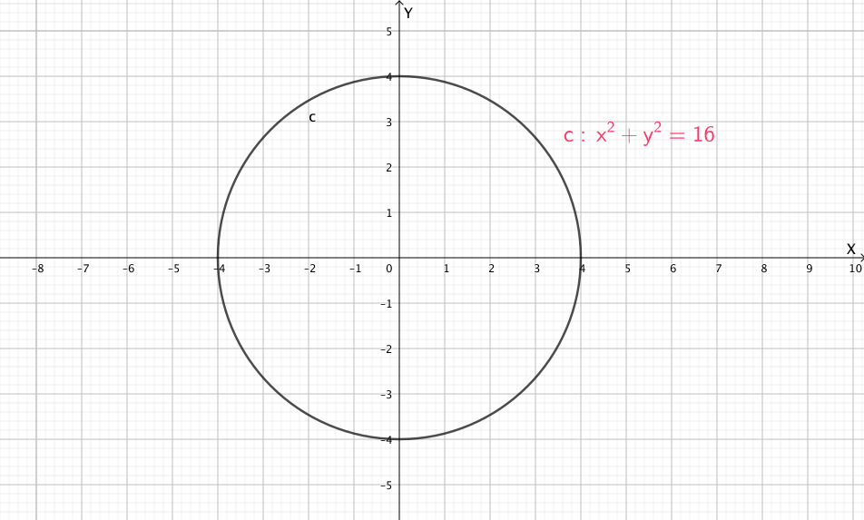

We can use two circles with two parameter equations, Torus parameter equations can be dervied
We want to derive the Parametric Equation of the red torus in the picture below. The vertical line is z-axis
On the $xy$-plane, the radius of small circle is $r$ and the radius of big circle is $R$
There is circle on the $xy$-plane, the distance between the center of pink circle and center of $xy$-plane is $R$.
The circle can be parametrized with following steps:
1. Parameterize the circle centered at origin $(x=0, y=0)$
2. Shift the circle to right side alone x-Axis by $R$
\begin{align*}
x' &= r\cos{\alpha} + R \\
y' &= r\sin{\alpha} \\
\end{align*}
The line segment $OD'$ can be rotated in angle $\theta$ on the $xy$-plane, and $OD'$ is equal to $R + r\cos{\alpha}$
So the big circle with radius $OD' = R + r\cos{\alpha}$ can be parametrized with following equation:
\begin{align*}
x &= OD'cos{\theta} \\
y &= OD'sin{\theta} \\ \\
x &= (R + r\cos{\alpha})cos{\theta} \\
y &= (R + r\cos{\alpha})sin{\theta} \\
z &= r\sin{\theta} \quad \text{ where z is only affected by $\theta$} \\
\end{align*}
From above picture, we can define two parametric equations:
1. $(x + 6)^2 + y^2 - 1 = 0$
2. $(x - 6)^2 + y^2 - 1 = 0$
We can multiply two equations(polynomials) in both sides:
$c(x)= [(x + 6)^2 + y^2 - 1] [(x - 6)^2 + y^2 - 1] = 0$
The equation will be two circles in the $xz-plane$
why $c(x)$ is the equation for two circles?
Polynomial Ring $\mathbf{R}[X]$ in $x$ over the Ring $\mathbf{R}$ is defined as following
\[
p(x) = \sum_{i=0}^{m} a_i x^i
\]
where $a_0, a_1, \dots a_n$ are coefficients, $x^0, x^1, \dots x^n$ are symbols
In our case, $\mathbf{R} = \Re, \mathbf{X} = x$
There is Lemma:
If Polynomial Ring is over the Integral domain $\mathbf{R}$, then the following is hold.
\[
f(x)g(x) = 0 \Leftrightarrow f(x) = 0 \text{ or } g(x) = 0
\]
Above Lemma can be proved by contradiction. Given two leading coefficients $a_m, b_n$ are both not zero
\begin{align*}
f(x) &= a_m x^m \dots \\
g(x) &= b_n x^n \dots \\
f(x) g(x) &= a_m b_n x^{m + n} \dots \\
\implies f(x) g(x) &\neq 0 \quad \because a_m, b_n \text{ are in Integral Domain } \mathbf{R} = \Re
\end{align*}
From above Lemma:
Let $f(x) = (x + 6)^2 + y^2 - 1, g(x) = (x - 6)^2 + y^2 - 1 \implies f(x) = 0 \text{ or } g(x) = 0$
which is two circles on the $xz$-plane from above picture.

We can investigate how the y-Axis is changed relative to x-Axis and z-Axis
If two circles are rotated around the z-Axis, then $z$ is not changed at all.
The relationship between $x$ and $y$ is $r = \sqrt{x^2 + y^2}$ on the $xy$-plane
For equation $c(x)$ from above, the $y$ is zero since $c(x)$ on the $xz$-plane
For $r = \sqrt{x^2 + y^2}$, $y$ can be any value alone a circle with radius $r$ and centered at origin,
So $x$ can be replaced with $r = \sqrt{x^2 + y^2}$ in $c(x)$
\begin{align*}
c(x) &= [(x + 6)^2 + y^2 - 1] [(x - 6)^2 + y^2 - 1] = 0 \\
r &= \sqrt{x^2 + y^2} \\
c(x) &= [(r + 6)^2 + y^2 - 1] [(r - 6)^2 + y^2 - 1] = 0 \\
\end{align*}